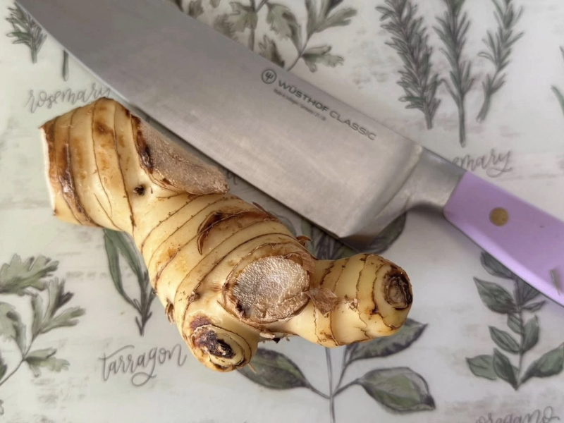

Galangal Coconut Soup (Tom Kha Gai)

Description
This rich and fragrant Thai soup blends spicy, sour, and creamy flavors using galangal, lemongrass, coconut cream, lime, and tender chicken. It's an elegant balance of heat and comfort, perfect for any season.
Galangal Stock Ingredients
- 32 oz chicken stock
- 1 (6-inch) piece fresh galangal, peeled and sliced
See photo of galangal:
Directions – Galangal Stock
- In a granite mortar and pestle, pound the sliced galangal into a coarse paste (about 1 minute).
- In a 2-quart saucepan, bring the chicken stock to a simmer over medium heat, then remove from heat.
- Pour one-third of the hot chicken stock into the mortar. Press with the pestle to extract flavor from the galangal (about 1 minute).
- Repeat twice more with the remaining stock, pressing to extract flavor each time.
- Let the stock sit for a few minutes to infuse, then pour it through a fine-mesh strainer into a clean saucepan, pressing on the solids to extract as much liquid as possible. Discard the fibrous galangal solids.
Soup Ingredients
- 32 oz galangal stock (from above)
- 1 (4-inch) piece fresh galangal, sliced
- 4 stalks lemongrass (bottom 7 inches only) Trim leaves off
- 2 medium shallots, sliced
- 1/4 cup fish sauce, divided
- 1 package chicken breast or fillets, thinly sliced
- 10 fresh or frozen makrut lime leaves
- 4 fresh red Thai chiles, stemmed and smashed
- 1 (13.5 oz) can full-fat coconut cream
- 3 tbsp fresh lime juice
Directions – Soup
- To the saucepan with strained galangal stock, add sliced galangal, lemongrass, shallots, and 1 tablespoon of the fish sauce. Bring to a boil over high heat.
- Add the chicken, return to a boil, then reduce heat to maintain a simmer. Cover and cook for about 20 minutes, or until chicken is cooked through and tender.
- Stir in the makrut lime leaves, smashed chiles, and coconut cream. Warm gently but do not let it boil.
- Remove from heat. Stir in the lime juice and the remaining fish sauce.
- Serve hot, divided into warmed soup bowls. Garnish with fresh cilantro if desired.
Special Equipment
- Granite mortar and pestle
- Fine-mesh strainer
Storage Notes
Fresh lemongrass, galangal, and makrut lime leaves can be frozen for up to 1 year without significant loss of flavor.